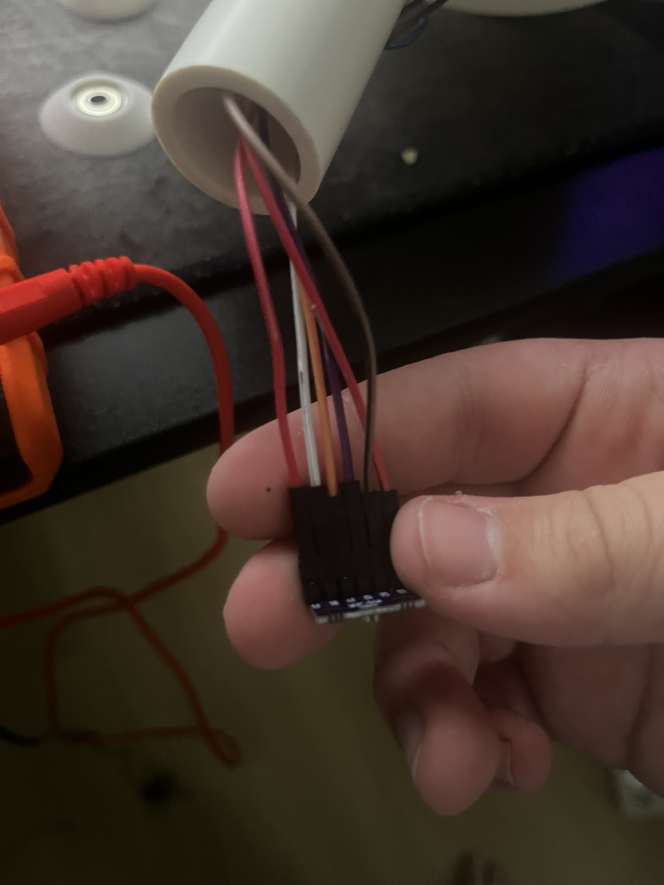
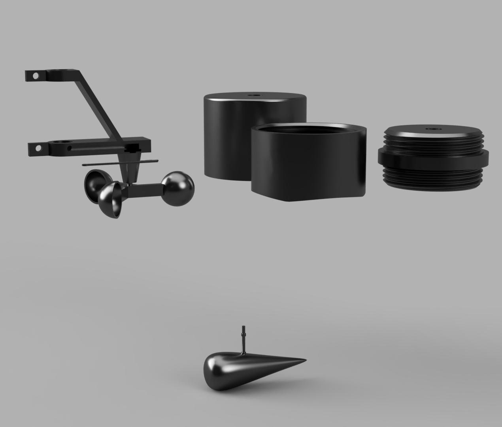
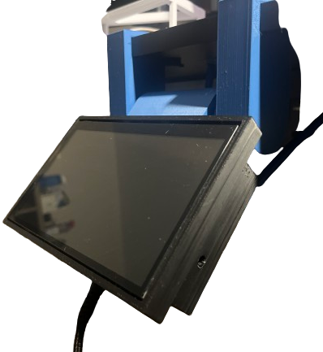

<!DOCTYPE html>
<html lang="en">
    <meta charset="UTF-8">
    <meta name="viewport" content="width=device-width, initial-scale=1.0">
    <title>Tom's Main Portfolio</title>
    <link rel="icon" type="image/png" href="favicon.png">
    <link rel="stylesheet" href="../style.css">


    <section class="section-navy-blue-bar" style="height:8vh;" >
        <a style="color:aliceblue;" href="index.html"><h3><b>Home</b></h3></a>
        <!-- <div class="text-column-right"></div> -->
    </section>
    <section style="padding:10px; display: flex; flex-direction: row; align-items: flex-start; justify-content:space-between; gap:50px;">
        <div class="card-left">
            
        </div>
        <div style="display: flex; flex-direction: row; flex:1;">
            <div style="display: flex; flex-direction: column; align-items: flex-start; flex:1;">
                <h1 style="font-size: 6.5vh;"><a href="https://docs.google.com/document/d/1UTdzkwb5eZ0V99DISLzgUJSxIQpFjs6hC6abtyfMiVc/edit?tab=t.0" style="color: navy;"> Basic Personal Weather Station </a></h1>
                <ul style="font-size: 3.5vh;">
                    <li style="margin-bottom: 1%;">Integrated <b>electrical, mechanical, and software</b> systems to accurately read the weather.</li>
                    <li style="margin-bottom: 1%;">Created a <b>custom mechanical assembly</b> to house the components.</li>
                    <li style="margin-bottom: 2%;">Used rising pressure readings to predict improving weather, convincing my teacher to let us play hacky sack outside.</li>
                </ul>
                <ol style="font-size: 3.5vh;"> <b>Three Things I Learned:</b>
                    <li style="margin-bottom: 1%;">Learned the importance of creating <b>color code diagrams</b> and a progress checklist to prevent misconfigurations.</li>
                    <li style="margin-bottom: 1%;">How to model <b>real-world components in CAD</b> and incorporate them into designs.</li>
                    <li style="margin-bottom: 1%;">Learned to design components with <b>modularity in mind</b> for easy maintenance and swap-outs.</li>
                </ol>

            </div>


            <div style="display: flex; flex-direction: column; align-content: flex-end; justify-content: space-evenly; gap:25px;">
                <div class="card-right">
                    
                </div>
                <div class="card-right">
                    
                </div>
                 <div class="card-right">
                    
                </div>
            </div>
        </div>
    </section>
    <section class="section-baby-blue">
        <div class="card-left">
            
        </div>
        <div style="display: flex; flex-direction: column; justify-content: flex-start;">
            <h1 style="font-size: 6.5vh ;">Raspberry Pi Touchscreen Case + Desk Attachment Hinge</h1>
        
            <div style="display:flex; flex-direction:row; justify-content:space-between;">
                <div>
                    <ul style="font-size: 3.5vh;">
                        <li style="margin-bottom:1vh">Utilized Fusion to create a <b>multi-joint Raspberry Pi case</b> for my desk.</li>
                        <li style="margin-bottom:1vh">Installed apps to levy the Raspberry Pi as a <b>multifunctional monitor and remote code-flasher.</b></li> 
                        <li style="margin-bottom:1vh"><b>Prototyped interfaces</b> to create a solid fit with the Raspberry Pi.</li>
                    </ul>
                    <ol style="font-size: 3.5vh"> Three Things I Learned:
                        <li style="margin-bottom:1vh">How to <b>combine components with joints</b> in a meaningful way in CAD.</li> 
                        <li style="margin-bottom:1vh">Learned to <b>follow engineers drawings and adapt</b> when not accurated/updated.</li> 
                        <li style="margin-bottom:1vh">How to adjust tolerances for a good fit.</li> 
                    </ol>
                </div>
                <div style="display: flex; justify-content: space-evenly;">
                    <!--For Later....images???-->
                </div>
            </div>
        </div>
    </section>


</html>


